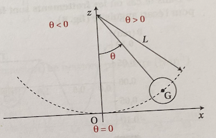
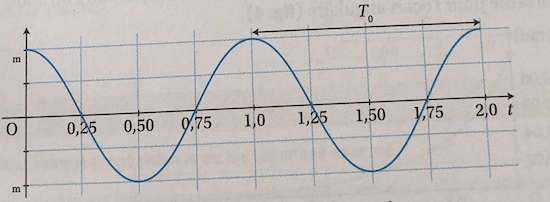
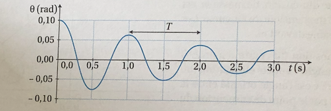
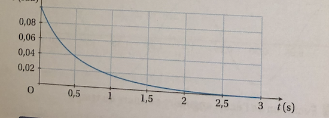

C'est une modèlisation du pendule pesant: un solide de petite dimension,
de masse m, est suspendu à un fil inextensible de longeur L et de masse
négligeable devent m.

On repère la position du centre d'inertie G du solid par un angle
θ appelé: angle orienté entre la verticale passant par le point de
suspension du fil et la direction.
Le centre d'inertie G du pendule oscille dans un plan vertival de part et d'autre de
sa position d'équilibre(θ=θ). L'angle θ est une fonction périodique du temps,
qui prend alternativement des valeurs positives et négatives : il s'agit d'une
fonction sinuspïdale du temps.

Les oscillations du pendule simple sont des oscillations mécaniques libres et non
amorties.
B. Période d'un pendule
La période des oscillations d'un pendule simple T obéit à trois lois :
La loi d'isochronisme des petites oscillations :
la période T des oscillations est indépendante de l'amplitude des oscillations θ
dans la mesure où cette amplitude est inférieure ou égales à 20°;
La loi des masees :
la période T des oscillations est indépendante se la masse m du pendule;
La lois des longeurs :
Le carré de la période des oscillations T² est proportionnel à la
longueur L du pendule.
Soit l'expression de la période des oscillations :
T = 2 × π ×
√L/g
C. Effet des frottement sur le mouvement du pendule
Dans le cas où les frottement sont faibles, on obtient la courbes d'évolution suivante pour
l'écart angulaire.

Le mouvement coorespond à des oscillations mécaniques libres et amorties: il s'agit
d'un mouvement pseudo-périodique du pendule. Ce mouvement est
carastérisé par la pseudo-Période T.
Dans le cas où les frottements sont forts, on obtient la courbes d'évolution suivante
pour l'écart ongulaire.

Le pendule n'effectue aucune oscillation : il retourne directement vers sa position
d'équilibre. Il s'agit du régime apériodique.
Maintenant que vous avez fini la lecon sur ce chapitre,
on vous a proposé une Quiz pour tester vous connaissance sur cette leçon.
Allez! C'est parti! Balançez-vous! Cliquer sur le smiley!